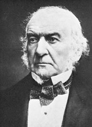
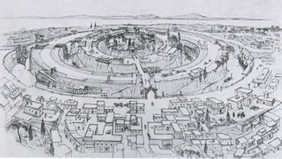
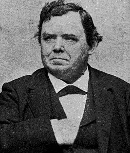

Wednesday, March the 17th, 2004
back to: title, date or indexes
When he wasn't rescuing fallen women or devising theories about Ancient Grecian colour blindness (see 2nd March), William Ewart Gladstone enthused about Atlantis. He was so infatuated with Ignatius Donnelly's book Atlantis, The Antediluvian World (1882) that he begged the Treasury for funds to mount an expedition of discovery, having decided that the Azores were the mountain peaks of the lost continent. The cabinet refused to let him have any money for this harebrained scheme, displaying a level of judiciousness which would not go amiss today.

Left to right : William Ewart Gladstone, the capital city of Atlantis, Ignatius Donnelly, and Mrs Gubbins' discarded old button.